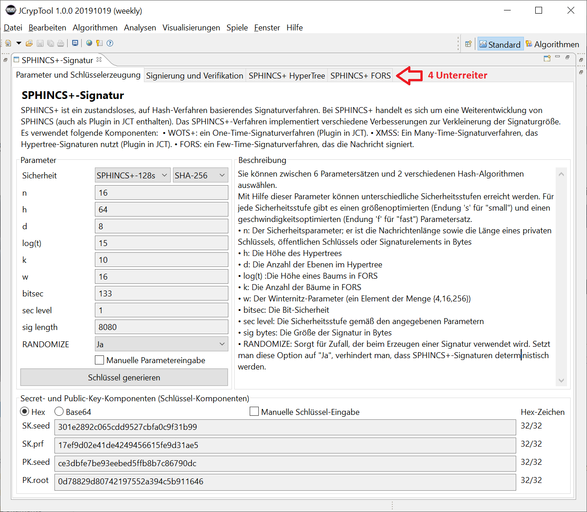
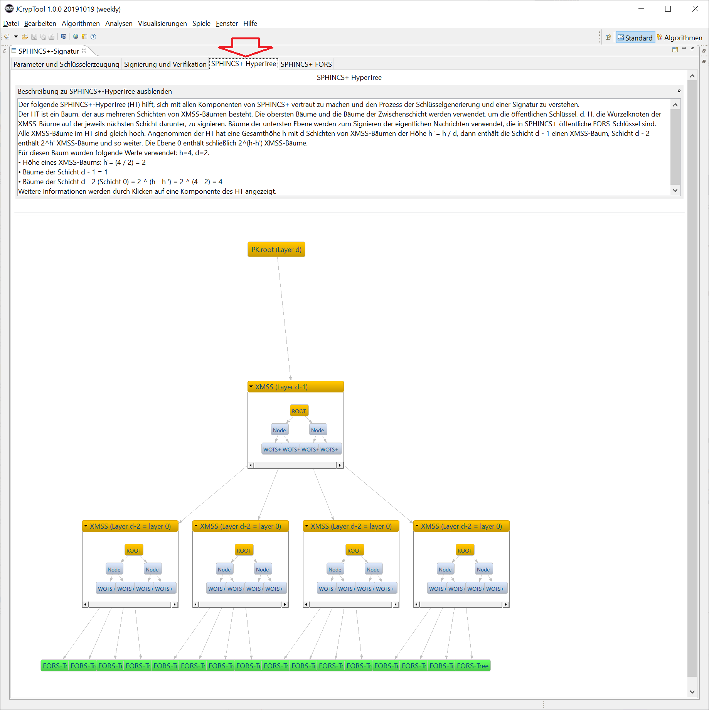
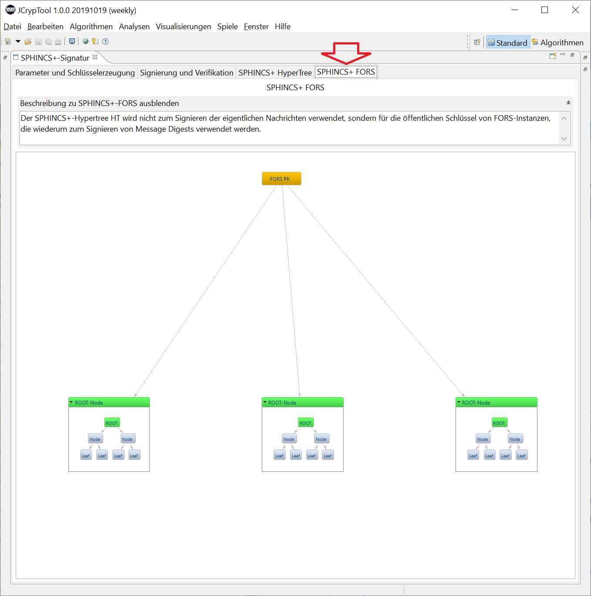

SPHINCS+ ist ein zustandsloses, auf Hash-Verfahren basierendes Signaturverfahren, das als Quantencomputer-resistent gilt. Stand Juni 2019 ist es in der Kategorie "Digital Signature Algorithm" in der 2. Runde der NIST-Competition Post-Quantum Cryptography.
Die JCT-Onlinehilfe zu SPHINCS+ ist in drei Teile aufgeteilt:
Bemerkung: Neben dem neueren Verfahren SPHINCS+ ist in JCT auch das ältere PQC-Verfahren SPHINCS implementiert.
Das Plugin wird über das Hauptmenü "Visualisierung" und den Menüeintrag "SPHINCS+-Signatur" gestartet. Danach erscheint ein Reiter "SPHINCS+-Signatur", der 4 Unterreiter besitzt. Deren Namen sind:
Im Folgenden werden die Inhalte der 4 Unterreiter beschrieben.
Im ersten Unterreiter können Sie die benutzten Parameter sehen und ändern, und die Schlüssel generieren, die dann im 2. Unterreiter zum Signieren und Verifizieren benutzt werden.
Der folgende Screenshot zeigt die Standardeinstellungen, und Schlüssel, die durch Drücken des Buttons "Schlüssel generieren" zufällig erzeugt wurden. Sie können Schlüssel auch von Hand eingeben, um Beispiele aus der Literatur zu testen.
Im ersten Unterreiter können Sie die ff. Verfahrensparameter verändern und einsehen. Die Parameter sind im Dezimalsystem (Basis 10) angegeben.
| Parameter | Beschreibung |
| Sicherheit | Dieser Parameter definiert das Parameter-Set für die darunter
folgenden Parameter. Das Namensschema der Parametersets ist: SPHINCS+-Sicherheitslevel{s,f}. Das gewünschte Sicherheitslevel kann folgende Werte annehmen: 128, 192, 256 bit. Der letzte Teil des Namenschemas {s,f} gibt an, ob das Verfahren auf Geschwindigkeit (f = fast) oder Größe der Signatur (s = size) optimiert wird. Die Parameter der Sets wurden im Standard so gewählt, dass ein vernünftiges Verhältnis zwischen Geschwindigkeit und Signaturgröße vorhanden ist. In der zweiten Combobox wird ausgewählt, welches Hash-Verfahren verwendet wird. |
| n | Der Sicherheitsparameter des Verfahrens. Die Länge der Signatur ist ein Vielfaches von n. Der Parameter n definiert die Ausgabelänge aller benutzten kryptografischen Funktionen, ausgenommen Hmsg. |
| h | Der Parameter h gibt die Höhe des Hypertrees an, und somit
die Anzahl der FORS-Instanzen. Je größer h ist, desto unwahrscheinlicher ist es, dass ein FORS-Schlüsselpaar mehrmals verwendet wird. Das Verfahren wird sicherer, jedoch wächst dadurch die Höhe des Hypertrees und somit die Signaturlänge. |
| d | Mit dem Parameter d lässt sich die Geschwindigkeit des
Verfahrens beeinflussen. Er definiert die Anzahl der Ebenen in den
XMSS-Bäumen im Hypertree. Dadurch muss Parameter d den Parameter h
teilen. Je größer d ist, desto kleiner sind die Unterbäume und desto schneller kann signiert werden. Jedoch definiert d auch die Anzahl der WOTS+-Signaturen in einem Hypertree, und somit auch in der entstehenden Signatur. |
| log(t) bzw. a | Der Parameter a berechnet sich aus dem Zweierlogarothmus (Logarithmus dualis)
von t. t definiert die Anzahl der Blätter in einem FORS-Baum und muss ein Vielfaches von 2 sein. Ein kleineres t führt zu kleineren und schnelleren Signaturen, jedoch benötigt ein vordefiniertes Sicherheitslevel dann einen größeren Wert für den Parameter k. |
| k | Der Parameter k hängt mit dem Parameter t zusammen. Diese 2 Parameter definieren die Geschwindigkeit und die Sicherheit von FORS. |
| w | Der Winternitz-Parameter w definiert die Anzahl und Länge
der Hash-Ketten pro WOTS+-Instanz. Ein größerer Wert führt zu einer linear größeren Länge der Ketten, jedoch zu einer logarithmisch-reduzierten Anzahl. Ein großer Wert w führt zu kürzeren Signaturen, jedoch wird auf Kosten der Geschwindigkeit (exponentiell). |
| bitsec | Bitsec ist die vorausberechnete Sicherheit der verwendeten Parameter. |
| sec level | Das Sicherheitslevel der verwendeten Parameter. |
| sig length | Länge einer Signatur in Bytes. |
| RANDOMIZE | Wenn RANDOMIZE gesetzt ist, wird ein zufälliger Wert als Seed für die pseudozufällige Permutation, die bei der Erstellung der SPHINCS+-Signatur verwendet wird, generiert. |
| Checkbox "Manuelle Parametereingabe" | Wenn diese Checkbox aktiviert ist, können Parameter außerhalb der vordefinierten Parametersets verwendet werden. Dabei werden jedoch die Felder "bitsec", "sec level" und "sig length" deaktiviert, da diese Werte stark abweichen können. |
| Knopf "Schlüssel generieren" | Durch Drücken dieses Buttons wird ein SPHINCS+-Schlüsselpaar generiert. Das Schlüsselpaar wird in der darunterliegenden Gruppierung angezeigt. |
Die Anzeige der Schlüssel kann mit den beiden Radiobuttons zwischen "Hex" (Hexadezimal) und "Base64" gewechselt werden.
Mit der Checkbox "Manuelle Schlüssel-Eingabe" kann der Seed händisch
eingeben werden. Dadurch lassen sich Signaturen reproduzieren.
Wenn man diese Checkbox aktiviert, wird auch der Titel des Knopfs "Schlüssel generieren"
geändert in "Schlüssel setzen".
Der Schlüssel besteht aus vier je n-Byte langen Teilen (also aus je 2*n Hexzeichen). In der grafischen Oberfläche werden diese Teile einzeln dargestellt. Die Abkürzung "SK" steht für "Secret Key" (privater Schlüssel) und "PK" für "Public Key" (öffentlicher Schlüssel).
| Komponente | Verwendung |
| SK.seed | Der Initialisierungsvektor SK.seed wird zur Erstellung aller geheimen Schlüssel von WOTS+ und FORS verwendet. Er ist der geheime Schlüssel des Hypertrees. |
| SK.prf | Der geheime Schlüssel SK.prf wird verwendet, um einen zufälligen Wert für den Nachrichten-Hash zu berechnen. |
| PK.seed | PK.seed ist ein zufälliger Wert. |
| PK.root | PK.root ist der öffentliche Schlüssel des Hypertrees. |
Im zweiten Unterreiter können Sie eine Nachricht eingeben und dann mit SPHINCS+ signieren (Voraussetzung ist, dass die Schlüssel im ersten Unterreiter erzeugt wurden). Anschließend können Sie die Signatur verifizieren.
Solange Sie nichts ändern, wird die Verifikation immer erfolgreich sein (ok). Wenn Sie die Nachricht ändern und nochmal den Button "Signatur verifizieren" drücken, wird die Verifikation nicht erfolgreich sein.
Die Signaturwerte kann man momentan in diesem Unterreiter nicht ändern. Wenn Sie im ersten Unterreiter nochmal neue Schlüssel generieren, werden diese hier erst genutzt, wenn Sie die Nachricht nochmal signieren.
Hier können Sie die Nachricht eingeben, die signiert werden soll.
Mit dem Knopf "Nachricht signieren" können Sie Ihre oben eingegebene Nachricht signieren. Dieser Knopf funktioniert nur dann, wenn vorher schon im Unterreiter "Parameter und Schlüsselerzeugung" Schlüssel generiert wurden.
Mit dem Knopf "Signatur verifizieren" können Sie eine bereits erstellte Signatur verifizieren. Sollten Sie noch keine Nachricht signiert haben, wird eine Fehlermeldung angezeigt.
Normalerweise ist die Verifikation immer ok. Um einen Fehler zu erzwingen, können Sie nach der Signaturerstellung die benutzte Nachricht ändern. Dann passt sie nicht mehr zur berechneten Signatur.
Drücken Sie mehrfach auf den Knopf "Nachricht signieren", wird jeweils eine neue Signatur berechnet. Diese hat aufgrund der Zufallskomponenten R jeweils einen anderen Wert.
Die Statusanzeige rechts neben den beiden Knöpfen zeigt Ihnen den aktuellen Status an.
Mit diesem Schaltknopf können Sie zwischen der hexadezimalen und der base64-Darstellung wählen
Eine SPHINCS+-Signatur besteht aus 3 Teilen, die in der grafischen Oberfläche getrennt dargestellt werden.
Diese Werte sind der zufällige Wert "R", der Signaturteil, den FORS generiert, und der Signaturteil, der aus dem Hypertree generiert wird.
In dritten Unterreiter wird ein typischer Hypertree mit seinen Elementen grafisch angezeigt.
Die Unterreiter 3 und 4 können unabhängig von der Schlüsselerzeugung im ersten Unterreiter aufgerufen werden. Deshalb hat der Hypertree eine feste Größe und wird (noch) nicht aus den im ersten Unterreiter erstellten Parametern dynamisch aufgebaut.
Im oberen Abschnitt befinden sich eine Beschreibung und ein dynamisches Textfeld. Das dynamische Textfeld zeigt Informationen zu dem Element in der darunterliegenden Darstellung, das Sie anklicken.
Die grafische Darstellung zeigt einen Baum, bei dem jeder Knoten (ausgenommen die Wurzel) wieder einen Baum darstellt. Die XMSS-Bäume werden als orange, ausklappbare Box dargestellt. Der Wurzel-Knoten (öffentlicher Schlüssel) jedes XMSS-Baums wird dabei als Knoten des Hypertrees verwendet.
Die Blätter des Hypertree sind FORS-Bäume. Klickt man mit der Maus auf einen FORS-Baum, springt man einen Unterreiter weiter auf den vierten Unterreiter des Plugins.
Der öffentliche Schlüssel des FORS-Baums wird als Blatt im Hypertree verwendet. Der FORS-Baum besteht wiederum aus Unterbäumen. Diese Unterbäume werden als ausklappbares Element dargestellt. Dabei sind die Wurzel und das Container-Element grün markiert – sie stellen das gleiche Element dar.
